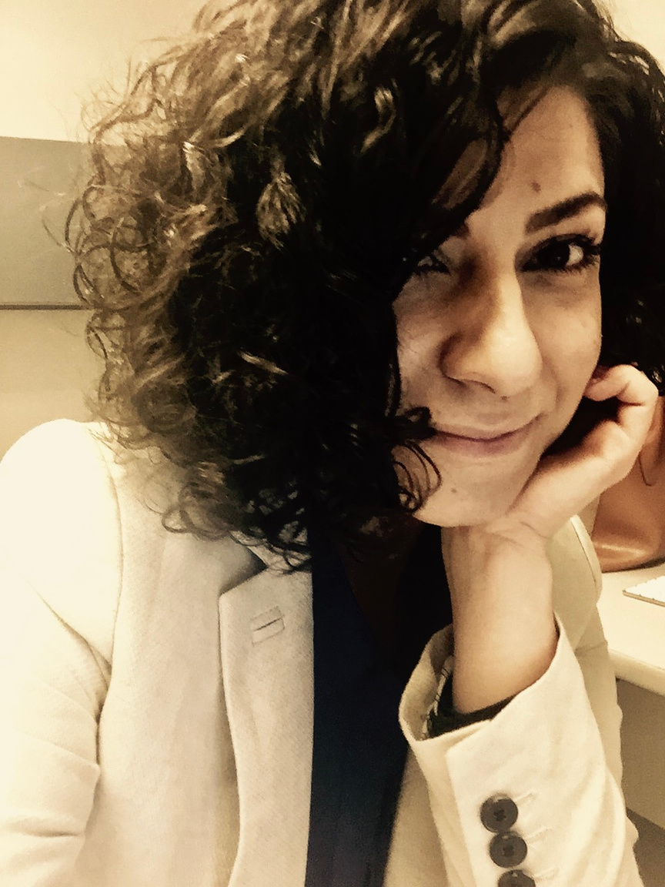

About Us

Eriş Çelikel
With a background in agricultural engineering and a master's degree in plant protection, Eriş brings a unique combination of technical knowledge and organizational acumen. He has managed complex projects in aviation, healthcare, and public transport—always guided by PRINCE2 principles and a hands-on, human-centered approach. Whether in the olive groves of Altınözü or a major European infrastructure project, Eriş is driven by structure, clarity, and sustainable outcomes.
Languages: Turkish, German, English
With a background in agricultural engineering and a master's degree in plant protection, Eriş brings a unique combination of technical knowledge and organizational acumen. He has managed complex projects in aviation, healthcare, and public transport—always guided by PRINCE2 principles and a hands-on, human-centered approach. Whether in the olive groves of Altınözü or a major European infrastructure project, Eriş is driven by structure, clarity, and sustainable outcomes.
Languages: Turkish, German, English

Pınar Coşkun
Pınar is a seasoned expert in business process outsourcing and customer service transformation. With more than 15 years of leadership experience at Xerox and other international firms, she has led multi-country service operations across Turkey, Germany, and South Africa. Her style is hands-on, structured, and pragmatic—turning complexity into simplicity and empowering people in the process. She thrives in multicultural, multilingual environments and brings sharp strategic insight to every challenge.
Languages: Turkish, English, German, Dutch
Pınar is a seasoned expert in business process outsourcing and customer service transformation. With more than 15 years of leadership experience at Xerox and other international firms, she has led multi-country service operations across Turkey, Germany, and South Africa. Her style is hands-on, structured, and pragmatic—turning complexity into simplicity and empowering people in the process. She thrives in multicultural, multilingual environments and brings sharp strategic insight to every challenge.
Languages: Turkish, English, German, Dutch